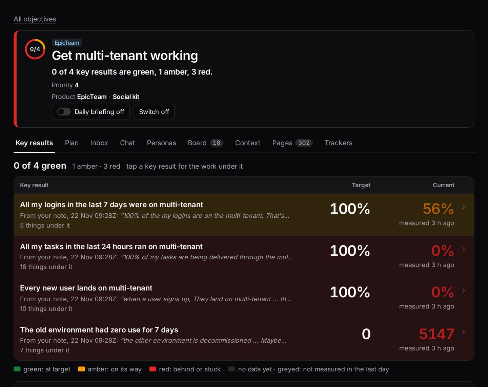
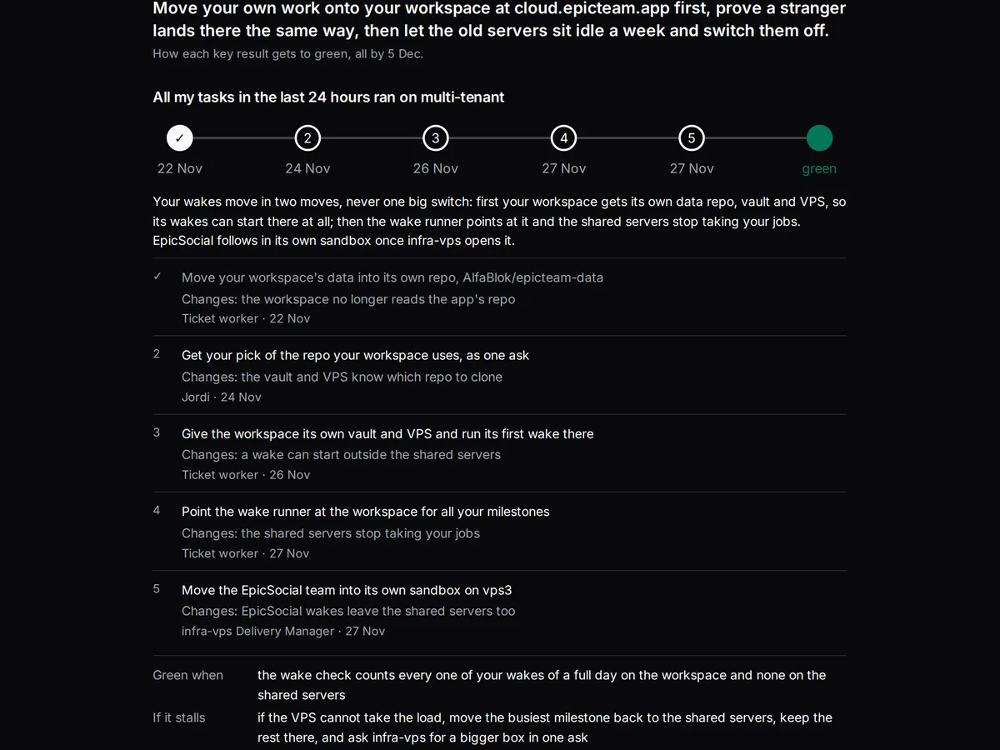
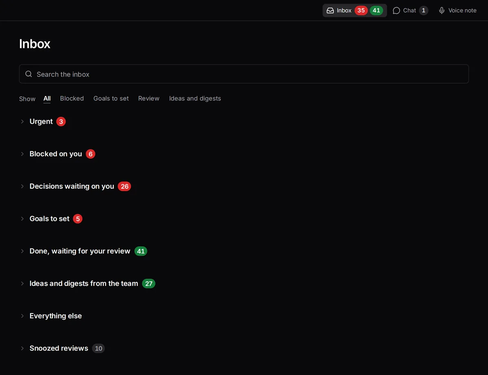
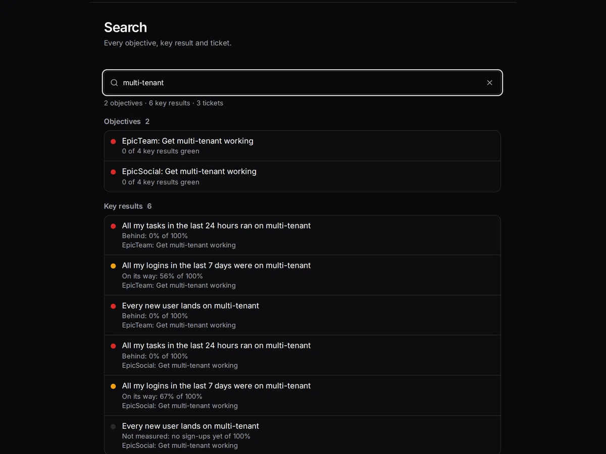
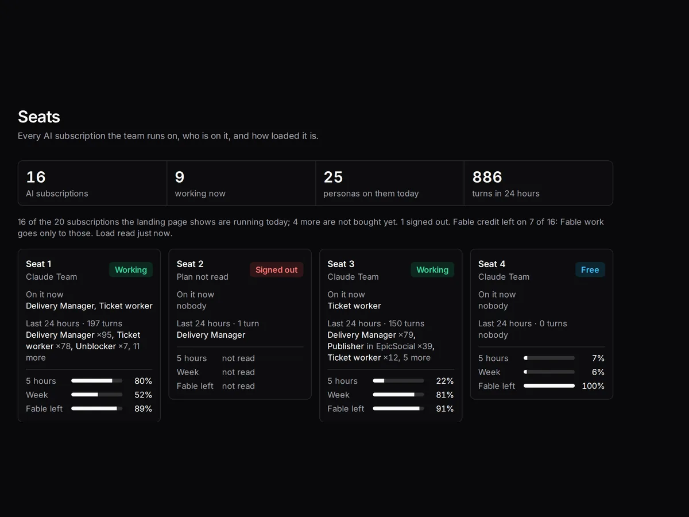

Run 20+ agents automatically aligned to accomplish your objective.
Set one objective and its key results. The team wakes, works and reports to them. Credits for startups and builders.

Why EpicTeam exists
From one prompt at a time to one objective over time.
Two of the seven frames of our vision. The whole story is on its own page.
Now set one objective, and keep it over time.
An objective is ongoing. Hundreds of prompts serve it, each one changed to fit the moment, until its key results turn green.
You move up from operator to decision maker.
A thousand lanterns, pointed at one spot.
Start many agents with no shared aim and their light scatters. Point every one at the same objective and the light becomes fire.
EpicTeam concentrates every agent's work on your objective.
Objectives and key results, worked by agents.
Write what you want as one objective with a few key results. Each key result has a target, today’s number and a light. Every ticket hangs under one key result, so all the work points at what you asked for.

One objective fans out. Results fan back in.
Up to 20 AI subscriptions in one pool, so one usage limit never stops the work.
Eighty cards in your inbox. The one that matters is on top.
Email sorts by time. Your EpicTeam inbox holds what your agents need from you: decisions, answers and finished work to check. It sorts them by what matters to you, so an older card on your top objective sits above a newer card on your fourth.

As they arrive
- 09:41Check the new waitlist page3
- 09:12Pick the beta dateUrgent1
- 08:30Answer: which bank?4
- 08:05Answer: which country first?1
- YesterdayPick a logo2
- YesterdaySend the beta email?1
- + 74 more, newest on top
In your inbox
Urgent 1
- Pick the beta dateUrgent1
Blocked on you 2
- Answer: which country first?1
- Answer: which bank?4
Decisions waiting on you 2
- Send the beta email?1
- Pick a logo2
Done, waiting for your review 75
- Check the new waitlist page3
- + 74 more, folded
Your objectives, in your order: 1 Launch the beta2 Refresh the brand3 Grow the waitlist4 Open the company
Urgent goes first
Anything marked urgent, or that you asked for again, gets its own section at the very top.
Then split by kind
Blocked on you, decisions to make, finished work to check. Each kind folds, so you open one at a time.
Then your order
Inside each kind, cards follow the order you gave your objectives. Move an objective up and its cards move up with it.
A drawing of the inbox with example cards. The sections and their order are the real app's.
The wheel
An organization that turns like a wheel.
One objective and the whole machine that moves it, until every key result is green.
“It’s pure voice. You talk your mind and it turns into a ticketing system. It gets things executed.”
Unstructured ideas in. Delivered work out.Zoom out from the wheel and it is one machine.
Three life cycles run the whole team.
Every request, every agent and every persona goes round the same loop. That is why nothing gets lost and nothing drifts from your objective.
Life of a ticket Nothing you say gets lost: it can only end in your inbox.
Life of an agent Every agent reads where things stand first and writes it back last.
Life of a persona A persona keeps its seat by the outcomes it logs.
- Life of a ticket Nothing you say gets lost: it can only end in your inbox.
- Life of an agent Every agent reads where things stand first and writes it back last.
- Life of a persona A persona keeps its seat by the outcomes it logs.
More of the real app, today.


Everything it does
What it does.
Every site counts its own visitors
Each of your sites shows its daily visits and sign-ups on its own row, named and linked, with test visits kept apart.
Steps you do by hand come as one page.
When only you can do something, you get one page of steps. Tick Done or Stuck on each, add a note, and the waiting work starts.
Open EpicTeam at cloud.epicteam.app
EpicTeam answers on its own address from anywhere, in its own look, and asks for a login before anything else. Old app.epicteam.app links still land there.
Sign up or sign in with Google or GitHub
Press Continue with Google or Continue with GitHub on EpicTeam or EpicSocial. A new account gets its own world, an existing one signs straight in.
The team emails you. Your reply finds its ticket.
The team writes to you from its own mailbox about one task, with its code in the subject. Reply from any mail app and your words land on that task by themselves.
Your agents send from their own addresses
The team mails from dm@epicteam.app and hello@epicsocial.app, and mail to those addresses reaches you. No paid mailboxes and no clicks per address.
Your AI subscription, our console
EpicTeam is 49 euros a month for the console. Your team runs on your own AI seats, vault, repo and cloud, all in your name. If you want, we run your server too, billed by the minute, from €8 a month.
Projects, not milestones.
The screens say project wherever they used to say milestone, so each project reads as the thing you are building.
Your goals as a scorecard.
Each pursuit you care about shows as one row with its deck, kit and value proposition one click away, and a mark for moving or stalled when nothing changed in three days.
One-time jobs, followed to done.
A job that belongs to none of your goals, like a letter about a dispute, still runs from your voice note to a card you answer, and shows on the One-offs page in the side menu until it is done.
What every teammate got done, one line each.
Each teammate ends its shift by logging every real outcome, delivered, a learning added, two merged, on one Outcomes page you filter by day, teammate, product or task. Each teammate is held to its own plain line of what counts, shown beside its name, and a line that only says it checked or started something is turned away. Two teammates never start the same task: the second is turned away and every task shows who holds it.
Priority mode.
One action asks every running session to save its place and stop, runs only the one or two tickets you name, then wakes the others where they left off.
Your marketing team asks your build team
When a campaign needs something built, EpicSocial writes one request to your inbox. On your yes it goes to EpicTeam's desk, which builds it and reports back.
See the engine your team runs on
The EpicSpine home page draws the five kinds of node in the middle of every team, from your words to your card, and what each product hangs off them.
Your whole company on one map
Every product you run, each goal drawn as a wheel under it: its key results in colour, reds, ambers and greens each kept together, its work in flight and who works it, kept current by itself.
What it is most worth it for, ranked
The eight things EpicTeam is most valuable for, ranked by what each saves or wins you, kept current as features ship.
Sign up with just an email, and reset a forgotten password
Type your email and a password, press the link in the mail and your own world opens. Forgot it? A one-time link sets a new one.
What has a deadline comes first.
A task with a deadline sits at the top of its inbox section, with the time left counting down, and turns red once it is overdue.
When what you waited for is ready, you hear about it.
Anything you asked for, marked urgent or gave a deadline goes to the top of its own inbox section, which opens by itself, marked Ready for you with where it is and one button to open it, and a WhatsApp or mail tells you once.
Your workspace opens on one objective: Get set up
A new account's workspace opens on one objective, Get set up, with five key results and a light on each: connect GitHub, create a goal, attach a persona, run it, and, if you want it, connect MCP for WhatsApp. The chat beside it works to turn them green. A second workspace you make from your account starts empty, for the objectives you choose.
Connect GitHub and pick your repo
Press Connect GitHub on Home or under Settings, Connections, and say yes on GitHub's page. Then pick the repo your team works in. A repo that already holds your workspace opens with its goals and key results as they are. Or make a new private repo in your account and your workspace moves into it.
Every goal keeps its shortlists
Each goal has a Trackers tab: small tables with names, a status and notes, like the influencers you mean to invite. Some come with every goal, empty until your team fills them, and your team asks you before adding a new one. Press a column to sort it, each status shows in colour, and the people proposed for the first message sit on top under the exact messages they would get.
Talk to your team, by voice or chat.
Speak when it is easier than typing. The team hears every word, once.
Call your team
Press Call and talk. A voice line answers, passes the work on, and the whole call lands in Chat with what it cost.
It listens while you think aloud
While you talk the voice says a word or two and waits. It answers when you say you are done, warmly and at once.
A call picks up where you left off
The voice remembers the last day of chat and calls, and knows your goals in their order.
Chat and Call on every goal
Each goal on your home page has its own Chat and Call, with a voice that knows that goal.
Calls never run on for nothing
After a minute of silence the call warns you and hangs up, or ends when you say goodbye, with the transcript and cost kept.
A locked phone keeps the call and the note
Calls and voice notes keep going when the screen locks, with big buttons that are easy to hit outdoors.
A voice note follows you around
Keep recording while you move between pages. A small pill takes you back, the mic is ready at once and a phone call never loses the note.
Every voice note lands in your memory
Notes from Chat and WhatsApp are kept once in shared memory, where every agent can find them.
One note, every part handled
Answer one card by voice and anything else your words touch reaches the rest of the team too.
Replies read aloud only when you ask
Nothing plays by itself. Press Play for a calm voice, and stop it whenever you like.
Send screenshots and files in Chat
Attach or paste images and files, several at once from the phone's photo picker or the file dialog, and the team sees them with your message.
Chat opens in under a second
The latest messages show at once and older ones load as you scroll.
Chat is one tap away
A Chat icon sits in the top bar on every page, laid out for the phone, with tables shown as tables.
Your red line sits on top
The team reads your recent voice notes, proposes the one thing that moves you forward most, and keeps what blocks it at the top of your inbox once you agree.
A voice note from any page
Tap the microphone in the top bar to send your team a voice note without leaving the page you are on.
Talk once, both desks hear it
Say it to either desk, and the part meant for the other desk reaches it at once, in your own words.
One report a day from your desk.
Every evening your desks send one WhatsApp and one email together: what each got done, the numbers that moved, and the one thing each needs from you.
Your morning briefing on WhatsApp at 6:00.
Every morning at 6:00 your time one WhatsApp brings what to start with, what went out yesterday and what goes out today, with four pictures: your objectives, the team's last day, each channel's week and the campaign plan. A briefing that does not arrive alerts you in 15 minutes. The last briefings' pictures also wait on Home under the Briefing button, earlier ones one tap away.
A strategist for each big project
Three times a week a strategist reads all the open work of one project and its numbers, names what you are really after, says what moves it and what is busywork, and brings you a few recommendations with why.
Speak once on a card, both desks hear
A voice note you leave on a card that also speaks to your other team reaches that desk once, and you get one line saying so.
Say it twice and the team checks it is live
When you ask for the same thing twice, by voice or typed in the chat, the team opens the live screen on a phone and a laptop and checks it against your words. If it is not there, you get one red message saying what is missing. A typed message can also mark a card stale, not only a voice note.
Point back and the desk finds what you mean
When your note points at something from before, like "the flats he suggested" or "testers", the desk looks through every project, your recent words and past chats first. If it is still not sure, it asks you one open question you answer by voice note, never a choice, and keeps asking until it can say what you mean in one sentence. Once you say yes, that sentence becomes a rule every agent reads.
The desk reads every message against all your objectives
Each message you send the desk comes with every one of your objectives beside it, straight from your objectives list and in your order: its lights, what is next and your newest words on it. Add or drop an objective and the desk follows by itself. It answers with what your message changes for them, and if it cannot tell, it asks you one open question.
Voice notes up to two hours
Record up to two hours in one voice note, and you are told before anything is cut.
Three things to start your morning
Each morning your Team desk sends you one short message: the three things that matter after a night of reading your objectives, your newest words and the day's work, with the full read linked.
A seat kept for you
One seat is always kept for you, so your Team desk answers even when the team has used every other seat.
Talk as long as you like on a card
A long voice note on any card is taken whole, every word, and reaches the team that owns it.
Your evening brief is one picture of all your lights
At 19:40 one WhatsApp picture shows every objective in your order with its lights, today's changes ringed, and the brief's words as its caption.
Your daily social digest shows what worked, best first
At 20:00 one WhatsApp picture lists the last 24 hours of posts, best to worst by impressions and replies, so you see what works at a glance.
A voice note is never lost
Every recorder keeps your audio on the device until the server confirms it, retries for days and shows waiting to send. A bad connection never costs you a note.
Sent in seconds, with a clear Sent mark
Tap stop and your voice note says Sent as soon as your audio is safe on the server, then your words appear in the chat by themselves. A slow send alerts the team.
Ask for a briefing and talk through your objectives
Press Briefing or say brief me, in the chat or on a call: your team takes each objective and its key results one by one, with each number and when it was measured, and you answer by voice. What you say is kept on that objective for the team.
Go through your inbox on a call
Call your team and say next: the voice already knows your inbox and your objectives, reads each card and what it asks you, and keeps track of which card you are on.
Call about one part of your inbox
A phone button beside each inbox section, like Goals to set, starts a call that already holds those cards. It guides you one by one with each card and its evidence on your screen, asks what you want, presses your own button only after your spoken yes, and hands everything else to your team.
Every call is kept and checked like a voice note
Each call with your team goes whole into your memory: your words, the voice's and everything the call did. A minute after you hang up, a check lists what you asked, what landed and anything that did not, and your team turns each gap into work.
The call does what you say, and says done only when it is
Say yes on a card and the call presses it, even when you ask for something else in the same breath. It says it landed only once the change is saved in your project, tells you each answer from your team on the question you asked, and when you give feedback or ask it not to interrupt, it listens until you are done.
Your desk tells you what it sent where, and asks you nothing in the chat
Speak or type as much as you like. Your desk answers with each point you made and where it went, with a link. Its own advice goes to the teammate doing the work, and any question for you waits on your inbox, so nothing gets lost in the chat.
Keeps your inbox focused, no context overload.
Small things the team does so your list holds only what needs you, once, in words you can judge.
An inbox of a few clear sections
Your inbox opens folded on what is blocked on you, goals to set, and finished work waiting for your review. You open only what you want to look at.
One page, one card
When several tasks change the same page, you get one card for it, never one per task.
Folded tasks close themselves
A task folded into another task's card closes on its own, so it never asks you twice.
Answered questions leave your list
Answer a question once, in the inbox or in the repo, and it drops off for good.
Snooze what can wait
Hide anything for three hours, three days, a week or a month. It comes back by itself, and a count shows what is snoozed.
Vague work never reaches you
Finished work reaches you only as a clear card with a live link to check. Anything vaguer goes back to the agent first.
The Gap finder skips what already shipped
Each day it lists what you asked for more than once and still lack, after checking what was delivered since its last run.
Proposals never repeat
The two personas that suggest new goals check what exists and each other first, and never suggest a turned-down idea again.
Every button answers at once
A press is saved within a second and the slow repo write runs after, so you never wait or press twice.
One answer closes every repeat
Answer a question once and every other open question it settles closes too, quoting your words. Money and access questions only get flagged.
What still needs you, ranked
One page lists every task that still needs your hands, ranked by the minutes it costs you each week, with how each one leaves your hands.
Your inbox sorts by what you said matters
A helper reads your recent voice notes and ranks every card high, normal or low, with your own words as the reason. When it cannot tell, it asks you once.
Three clear buttons on every card
A question gets one Answer. Finished work gets Approve, Changes wanted or Decline, and changes wanted reopen the work by themselves.
Answer any card with a voice note
Record your answer on the card itself. It is written out and sent as your reply.
The next card lands where you were
When a card closes, the page scrolls so the next card's top sits where the old one was, on the phone too.
Add a last thought, or bring a card back
After a card closes, a short note offers to add a last thought, by voice or text, to the same owner, or to bring the card back. Every card you closed stays findable with Add comment, even to change your decision.
Every card says how old it is
Each card shows when it was raised, like 5 min ago or 3 days ago, next to its kind.
One card per task
A task that reports twice still reaches you as one card, never two copies.
Sort each list your way
Lists open in priority order. Switch a list to most recent or longest waiting and it remembers.
A home page that stays tidy
Answered and in-progress lists fold away and scroll in their own pane, every section looks the same and cards never scroll sideways.
Counts you can read at a glance
A red count for what is blocked on you, a green one for work to check, and an unread count on Chat, on every milestone too.
One inbox for every project
Finished work from every project lands in the same inbox, whatever repo it lives in.
Every voice note gets a second look
A day later each note is read again, ask by ask, and anything that never became a task is offered to you.
Questions go to the right person
Bring in other people. Each gets their own inbox, and a question goes to whoever knows, not always to you.
Your laptop tasks, one sitting.
Say you are on your laptop and the tasks only your Mac can do come first, each one text to paste into the Claude app. Each task opens into one card per thing you do, with its own Done, Stuck and note. No terminal steps.
Laptop tasks that name every step.
Each laptop task reads the team's rules first, names the exact address, account and button for every step, follows what you decided and does the rest by itself, so you only press what only you can.
Your long voice notes update the cards they touch
After a long voice note, every card in your inbox it speaks about shows Updated or Stale with your words, and its owner hears you at once.
Live tester counts on your red line
Your red line shows how many testers applied, signed up and pay, read live from the product, with a link to its testers page.
Red lines as one slim row each.
Each red line at the top of your inbox takes one slim row. Tap the pencil to change it by typing or by voice, or the bin to remove it.
Accept an adviser's whole set at once.
Press Accept all on a persona's recommendations, or accept one, ask a question back or say no. Every one you accept becomes a task the team delivers.
Everything the team asks of you, and why.
One live page lists every task the team gives you, in every project, each with one line on why the team cannot do it itself. What the team can do, it takes back, and the count shows week by week. A new task with no reason never reaches your inbox.
One quiet design for the Inbox and every card.
Every card has the same frame, a short heading, one grey line saying why and two buttons. The Inbox shows what is blocked on you, then finished work to check.
Settings holds only what you change.
Settings shows your red lines and the pages you set things on. The dashboard panels you did not use are gone, and one switch brings them back.
Every card says where it came from and what you decide.
Each card opens with where it came from, your own words and their date or who raised it and why, and ends with the one decision asked of you and what the team recommends. A card without both never reaches your inbox.
Every card is checked against your own words first.
Before a card reaches you, the team opens what it made on a phone and on a laptop and sets your own words beside it, point by point. A card that missed what you said, or looks squashed or broken, goes back to the team, and a card that passes shows you the live screen.
Your inbox opens in under 2 seconds on a phone, and nothing jumps.
The inbox sends only what the screen shows, and each part fills in its own place from the top down, so a card never moves away while you read it.
Find anything in your inbox with one word.
Type a word at the top of the inbox and every section, blocked, to review and done, shows only what matches, including your own notes.
Pictures shaped like the idea
Every page the team sends draws its idea in the shape it has: a cycle as a wheel, a sequence as one line, a hierarchy as a tree, a comparison side by side. A big decision comes as one page with the bottom line at the top and the bottom.
Your inbox tells you how each goal is doing, and what to try next.
Every day each scorecard sends one short digest, greener or redder and why. The team adds up to three ideas to get there faster, and asks you to set a goal where none is set. You answer by voice, text or one tap, and you can show one kind at a time.
Home shows how every goal is doing, with your inbox one tap away.
Home opens on all your goal sets, each row green, amber or red. The Inbox button sits in the top bar beside Chat and the microphone, with its counts, on any screen and on a phone.
A decision is answered by its next step.
A card that asks you to decide shows its options as its buttons, each saying what happens next, like Yes: plan it or No: park it, plus room for your own words. One table lists every card type and its buttons.
The button says how many follow-ups start.
Every card with follow-ups, switched On or Off or set to Start now or Park, says Start 6 on its button, Start 5 when you switch one off, and Close, start nothing when every one is off. Mark complete is left only on a task with nothing to start.
Park any card you are not ready to decide.
Every card that waits on you, decisions included, has a Park button beside its own buttons. Park decides nothing: the card leaves your inbox for a month and comes back by itself, and Bring it back returns it at once.
Every card you answer stays in place as one green Sent row.
Paste a key, press a button, pick a decision's option, park it or send a note or a voice note, on any kind of card: the card shrinks where it was to one green Sent row, so you see it landed and the page does not move. Only your last answer keeps its row: answer the next card and the earlier row leaves the inbox. Swipe the row away on your phone or close it with its x on a laptop. Add comment on that row reopens a note box on the same card. Each section's heading stays at the top while you scroll its cards. A spoken answer that covers a card's asks counts as your answer, and the card stays answered after you reload.
The card you talk to stays where you left it.
While you record a voice note or type on a card, new and reordered cards wait: your card does not move and gets a dark frame. When you send or clear it, the inbox updates.
The Senior advisor's week, as one set.
Your Senior advisor's suggestions for the week arrive in your Inbox as one marked set: accept all with one button, or accept, decline or answer each one. An accepted one becomes a ready task.
Sort what waits for your review
Sort finished work waiting for your review by priority, newest or longest waiting, and each inbox section remembers its own choice.
Connect an account with one button.
When the team needs one of your accounts, like a YouTube channel, a card in your inbox names the exact Google account and channel. One tap opens Google's own Allow page in the browser you are in, and the card says Connected.
See every time the team asked you to act.
Each time the team needs you, it is logged: what it asked, why only you could do it, how many tries and minutes it took, and whether you found it clear. One page counts the asks by week, a number the team works to bring to zero.
Every ask is tried by a fresh agent first
Before a request reaches you, an agent that sees only the card opens its links and walks each step. If it would have to ask which one or where, the request goes back to the team to be rewritten.
Sort the combined inbox
The combined inbox on your objectives home sorts by highest priority, most recent or longest standing, like your own inbox.
Every alert says real or test
Each message the team sends you says plainly whether it is real or a test, and you get a short alert when one of your goals' results turns green or red.
A link on every ask
Every question that needs you to act carries the link to where you act. One without is held back and fixed before you see it.
See the thing, then answer in one place
Every card reads the same way, in about half the words: what was done, the link to check, then one decisions row where your answer, Park, Snooze and the feedback box sit together. While you speak a note, its red bar stays on screen as you scroll.
What frustrates you comes first
Say something frustrates you, or ask for it again, and its card moves to the top of your inbox until you answer it, with your words on it.
Your inbox follows your objectives
Your inbox sorts itself by your objectives in your order: work on your first objective leads, and each card says which objective puts it there.
Plans arrive as a picture first
Every plan the team sends you opens with one diagram of the idea and few words, so you get it at a glance.
Key results you read at a glance
Each key result shows a short status and target, with the full text one tap away, on your phone too.
Decisions apart from finished work.
Cards that need your choice wait in their own section above finished work, every card starts with one plain word, and a card that does not say plainly what it asks never reaches you.
A question on what comes first sits at the top of your inbox
When your note names a new first thing, the team asks one line: put it first in your objectives? It sits above everything else. Yes reorders your objectives, No leaves them.
Goals to set are cards like every other card
Each goal the team cannot set alone shows as a card: your decision, the team's pick as the dark button, Park, and your words or voice under it.
Blocked on you holds only what you can act on
A line that asks you nothing, like a check that ran late, leaves your inbox and goes back to its team, which asks you one real question or clears it.
Every card says how long it has waited for you.
Each card in your inbox shows its age, from 12 minutes to weeks, counted from when it reached you, not from a later touch.
A calm menu: your objectives first, the rest folded
The menu shows your Inbox, Chat and your pinned objectives in your order. Every other objective sits in one More objectives fold, and Tools and Settings fold away until you open them.
Every link you see opens with one tap
Any web address on a card, a question for you, a page or a chat message is a link you tap, on phone and laptop, and the team's cards are checked so none shows one you cannot open.
Every card answers with its buttons, then Voice or Text.
Each card shows its own answer buttons in one even row, then Voice and Text. Voice records with one tap and sends with the next. Text opens a box for words and screenshots only when you want it, so no empty box fills the card. On a phone the buttons sit in even pairs.
Switch an objective off without losing it
Each objective has a Switch off button. It stays in your list, greyed under Inactive with the day you switched it off, and leaves your goals to set, your counts, your inbox and your team's work until you switch it back on.
Mark an objective done and keep it
Each objective has a Mark done button. A reached objective moves under Done with its day, out of your goals to set, your counts, your inbox and your team's work, and Undo brings it back.
Every choice shows its options
A card that asks you to pick between options shows the link or picture of those options above its buttons, and every link looks like a link.
See your team at work.
Where your goals stand, what the agents are doing and what they made, each in one place.
Every goal comes with its manager
A new goal gets its Delivery Manager the moment you make it, ready to switch on, and your objectives mark in red any goal nobody runs, because a wheel without a persona does not turn.
One objective, one screen
Everything about an objective lives on its own screen: key results, board, inbox, chat, context, personas and social kit. You switch its personas on or off right there, and every old link lands on it.
Each objective keeps its own pages
Every page the team makes for a goal sits in that objective's Pages tab, and the Pages list still shows them all together, grouped by objective.
Every goal opens the same way
Every entry in the sidebar is a goal: your objectives, then the other goals, each with its circle and inbox numbers. Each opens on the same screen and tabs, and tapping a number opens the Inbox tab that shows it.
See whose each objective is at a glance
Each objective's product shows as a small label in its own colour on a soft background above the goal, and every objective is named the same way, so two products with the same goal never read as one name twice.
See why each key result has its colour
Open a key result and one link takes you to what its colour is read from, a live page, a counter or a ledger, with when it was last read. A colour nothing readable backs says so plainly.
Your goals in your order
Goals list in the order you set, pinned from their own page. Say something matters more and the team reorders them.
A deck for every big goal
Each big goal has a short deck at a fixed address, with your own words in it, and it reaches you when it changes.
Every deliverable in one place
Each goal's page links everything made for it, from mockups to live pages, so nothing gets lost.
See your agents over the day
The Runs page charts how many agents worked at each moment, and on which server.
One project at a time
Switch between your products and the whole home page follows the one you picked.
Skills you can add
Your team starts with ready skills, and you can add your own and choose which agents use them.
Everything it makes looks like yours
Decks, diagrams, screenshots and clips share one house style and carry each product's own logo.
Your team has its own mailbox
Write to the team by email. It sends mail within set limits, and every send is logged.
Sign-ins are checked every hour
If a site signs the team out, you hear within the hour with the one step that fixes it.
Send a tool, get a verdict
Spot a tool you like and the team tries it, compares it with similar ones and says if it is worth using.
Your home lists what you build
Each product you build gets its own list on your home, with its campaigns and how many answers and checks wait on you there.
A stable product while the team builds fast
Every change runs on a staging copy first. Your product moves to a new release only when one ran well there, and one step puts the previous release back. The Releases page shows what runs where and every move.
A persona that turns your repeats into rules.
It reads your asks and voice notes, finds what should have become a standing rule and did not, then adds or merges the rule and logs each change.
A daily review of every wheel's goals.
A persona checks each wheel's rows for the vague, the unmeasurable and the stalled, and leaves its suggestions as cards in your inbox.
A daily speed log with predicted gains.
A persona reads the logs every day, reports how long your asks take to deliver and where the time goes, and proposes fixes with the gain each should bring, then checks the gain happened.
What shipped, kept in your memory
Every evening the day's list of what your team shipped goes into your own memory, grouped by goal, so you can ask what happened on any day.
Every page has a home
Summaries, reports and mockups the team makes are listed on Pages by repo and epic, with a search, reached from the sidebar, and each page has a bar back up to it.
Key results that check themselves.
Is the team's browser signing in and posting? Is your social running on every channel? Each key result is read live every hour and shows green, amber or red with the reason.
Every key result shows when it was measured
Every key result of every objective measures itself once a day and shows its time. One that has not been measured for a day greys out, so you never read an old number as today's.
Effort follows your order
Goals you put on top get more agents and faster wakes, low ones fewer, parked ones none, all on one scorecard you can click through.
Every login lands in your Bitwarden
Each account the team makes for you is saved in your own Bitwarden the moment it is made, and shows on your phone.
Every agent rereads your objectives before it works
Each agent's work opens with your objectives in your order, their lights and whether each moved today. Every plan and report starts by naming the objective it moves, so work that moves none waits.
A WhatsApp the moment a real tester signs up, for every product.
When someone applies to test any of your products, you get one WhatsApp at once, marked real: who it is, the product, and the post or social that brought them.
Every goal keeps moving until it is all green.
Each of your goals has a team member who wakes on a schedule. While a goal is below green, with nothing waiting on you or in review, it starts the next step at once.
Every agent rereads your objectives before it works.
Your goals, in your order with their lights and your words, open every wake and every task the team starts. Each plan and report begins with the goal it moves.
Pinned pages with a name
Pin any page from Pages and give it a plain name you will know it by, like Scorecard. It sits at the top of Pages and in the menu, with its own short address, a Refresh button, and Rename or Unpin.
Priority mode from your phone
Give one task the whole team from the menu, or by holding its card.
Every card opens with the goal it moves
Each card and the evening brief start with the goal they serve, its lights and whether it moved today, so you read progress against your own list.
Your brief opens with each tester
The morning message and the evening brief start with how many testers you have and one line on each: emailed, replied, what they are doing. Then only what moved and what is stuck.
Every morning starts from what answers you
Overnight the team reads what is going on with each of your goals several times over, and a last reader judges whether the work answers your newest words.
Small goals fold into bigger ones
A small goal that belongs to a bigger one is shown inside it, so your goal tree stays short without losing any work.
Every X link you send reaches the agents who need it
Send the team a link from X and it writes down the lesson, tags its topics and places it on the product, goal or campaign it informs. Every agent working there gets it in its brief, and one page shows them all on the map.
Each product written once, every goal and campaign on it reads it.
A Products page says what each product is: the problem it solves, who it is for, how it works and what it does for you, with its social kit. Every goal and every campaign names its product and shows those same words and that same kit.
Every objective has its plan, one tab away
Open an objective and press Plan: the same eight sections as its campaign's marketing plan, read from the campaign that carries it. An objective with no plan yet shows every section empty, so you see what is missing.
Each product keeps one map, and its key pages are tabs
Every product has a fixed set of key pages, like its marketing plan, pricing and launch board. Each one is a tab on its goal, and every teammate reads them before working and updates them after.
Each objective reads plainly: its priority, its product, every status in a word
Your objectives are numbered in your order. Each one says its priority, opens its product in its own tab, shows every target in full and says each key result's status in a word: at target, on its way, behind or not measured.
Your team works on servers of its own
Each wake of your workspace's team runs on a fresh server made for you alone, and its Delivery Manager starts its workers there too. Your keys are read from your own vault and your repo is cloned for that one job, then wiped.
Your team runs on your own AI
Paste your own Anthropic API key or Claude login on the Your AI page. It goes into your own team vault, and every job of your team uses it. We never lend you our seats.
Chat and call your team on your own AI
Your team's chat answers on your own server with your own AI. Its Call uses your browser's own listening and voice, so every word stays on your AI.
See every AI subscription your team runs on
One screen shows each AI subscription, the agent working on it now, who used it today and how close it is to its limit.
Credits for startups and builders.
We are giving EpicTeam credits to startups and small B2B teams that build. Sign up and write the objective you want to reach, with its key results. We read every one, and we may accept you.
Sign up
With Google, GitHub or email. It takes a minute.
Write your objective
What you want to reach, and the key results that would prove it.
We may accept you
If it fits, your team runs on our credits and starts on your key results.
Your AI subscription. Our console.
Your team runs on your own AI seats, in your own name, with your own vault, repo and cloud. We host the console that turns your objective into their work.
The console
Objectives, key results, inbox and every persona, on your own AI.
Start for €49 a monthA server, if you want one
We run your agents on our cloud, billed by the minute and never more than the month’s price. Or run them on your own cloud.
| Size | A minute | A month |
|---|---|---|
| Small, 2 cores, 4 GB | 0.02 cents | €8 |
| Medium, 4 cores, 8 GB | 0.03 cents | €12 |
| Large, 8 cores, 16 GB | 0.06 cents | €22 |
| Extra large, 16 cores, 32 GB | 0.1 cents | €39 |
The console includes
- Your own team page, inbox, goals and review cards, on phone and laptop
- Every persona, on its own schedule
- Your own GitHub repo: the console needs access to that one repo only
- Your keys read from your own Bitwarden, never stored by us
You bring the AI: your own Claude seats or API key, paid to Anthropic in your name. Billed monthly, cancel any time. Prices before VAT.
Want it for your team?
Building a startup? Apply for credits and tell us your objective. Or start the €49 console on your own AI and sign up with Google, GitHub or email.